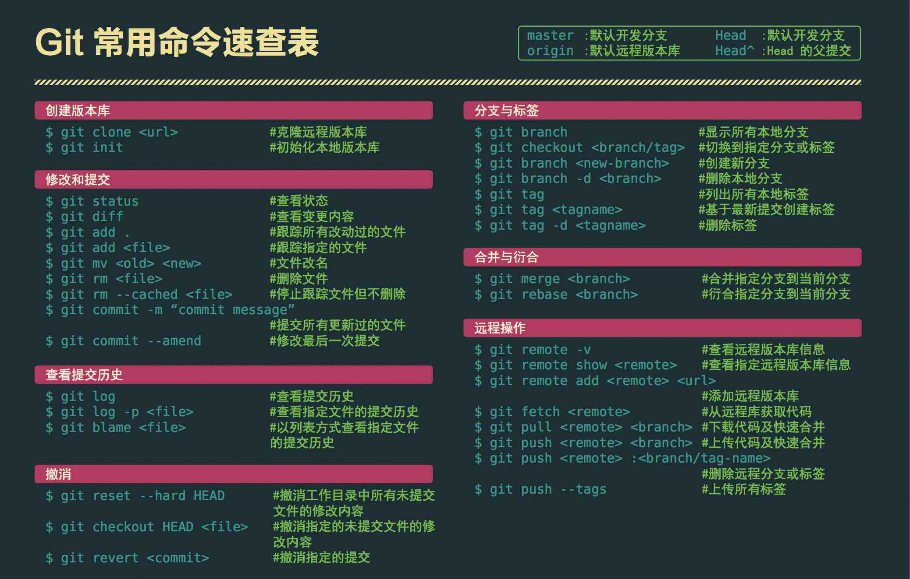

GIT
GIT
本地管理仓库 团队合作项目的代码管理（github）
git linux 系统之父 为了管理 linux 各种版本开发一款继承与 linux系统的软件
==> 独立成一款专门的代码管理软件
windows 不内置git软件
需要安装git软件
windows 系统下有两种使用方式
1、cmd 窗口进行运行
显示 git 不是内部命令 说明没有配置环境变量
D:\Git
2、使用git 提供的控制台窗口进行运行
支持 linux 窗口命令
ls 查看 当前目录下的所有文件
ls -a 查看所有文件包含隐藏文件
pwd 当前所在目录
cd 盘符 进入指定分区
cd ~ 回到用户根目录
clear 清屏
git 使用
项目中需要创建一个 .git 文件夹，该文件夹是当前项目的管理记录文件
除windows 系统 . 隐藏文件，系统不允许直接创建隐藏文件
git init 对项目进行管理初始化（创建.git文件夹）
git status 查看项目状态
-s 查看项目的简要状态
git add 添加文件管理
git add . 管理当前目录
git add --all 管理所有文件
忽略不需要管理的文件，需要在当前项目的根目录创建一个 忽略文件
.gitignore 配置 需要被忽略的文件列表
配置方式：一行一个忽略文件或文件夹名称
git 的版本记录
git commit -m 'msg' 提交日志（对版本进行快照） 执行之前需要先做一次代码托管
git add
配置自己的信息
git config --global user.email "邮箱地址"
git config --global user.name "姓名"
查看
git config --global user.email
git config --global user.name
git diff 查看版本差异
查看的是当前未被提交的文件和 仓库中 最后一次提交的文件的差异
git log 查看当前仓库中存在所有版本信息
git reset --hard 版本号前6位 版本回滚
是双向可逆
假使回到第一个版本 命令git log 无法查询到第二版本 所有版本信息在 .git/logs/HEAD 里面
或者使用 git reflog 命令
github 是一个在线仓库
1、需要在本地配置远程仓库地址
git remote add 名称 地址
git remote -v 查看 本地 中的所有远程地址
git push -u github master 本地项目的导入
导入 内置定义的远程地址 分支名（默认都是主分支）
项目克隆
git clone 项目地址
创建分支
git branch 分支名称
切换分支
git checkout 分支名称
合并分支
先切换到主分支
git checkout +主分支名
git merge +分支名
*若有冲突文件，修改冲突文件
删除分支
git branch -d 分支名
以图形界面显示
git log --decorate --oneline --graph --all
